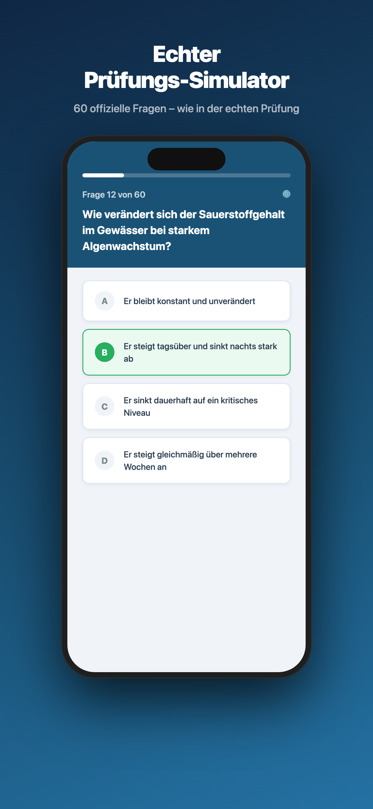
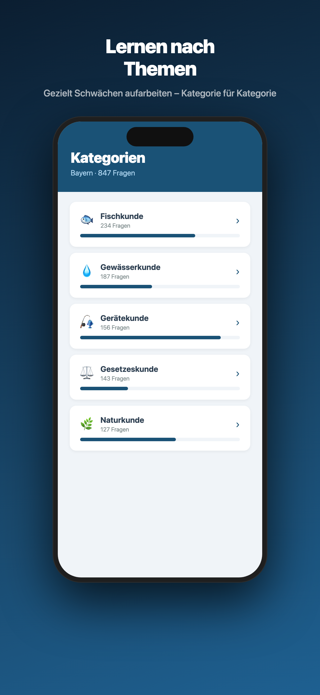
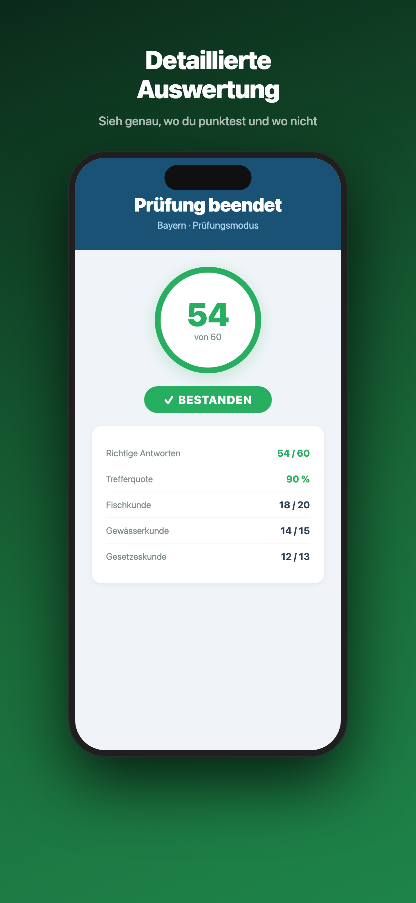

Über 2.800 offizielle Prüfungsfragen 2026. Kostenlos. Ohne Anmeldung. Direkt auf deinem iPhone.



Alle Fragen direkt aus den offiziellen Prüfungskatalogen – aktuell und vollständig.
60 Fragen unter echten Prüfungsbedingungen mit Zeitlimit – wie die echte Prüfung.
Fischkunde, Gewässerkunde, Gesetzeskunde und mehr – gezielt Schwächen aufarbeiten.
Schwierige Fragen speichern und später gezielt wiederholen.
Nach jeder Prüfung siehst du genau, welche Kategorien du noch verbessern musst.
Alle Fragen und Antworten auch auf Englisch – ideal für alle, die Deutsch noch lernen.
Weitere Bundesländer folgen in zukünftigen Updates.
Keine Anmeldung. Keine versteckten Kosten. Einfach laden und lernen.
Im App Store ladenDer Angelschein (offiziell: Fischereierlaubnisschein oder Fischereischein) berechtigt in Deutschland zum Angeln in öffentlichen Gewässern. Er wird nach bestandener Fischerprüfung ausgestellt und gilt in dem jeweiligen Bundesland.
Die Fischerprüfung gilt als moderat schwer. Mit gezielter Vorbereitung über 2–4 Wochen bestehen die meisten Kandidaten beim ersten Versuch. Die Durchfallquote liegt je nach Bundesland bei etwa 20–30%.
Die meisten Kandidaten bereiten sich 2–6 Wochen vor. Mit einer guten App oder Lernkarten und täglichem Üben von 30–60 Minuten ist die Prüfung gut zu schaffen.
Die Anzahl der Prüfungsfragen variiert je nach Bundesland. In Bayern sind es 30 Fragen, in Hamburg 60. Üblicherweise dürfen maximal 20–33% der Fragen falsch beantwortet werden.
Die Prüfungsgebühr liegt je nach Bundesland zwischen 20 und 80 Euro. Hinzu kommt der Jahresfischereischein, der weitere 10–50 Euro kostet.
Die Fischerprüfung deckt fünf Hauptbereiche ab: Fischkunde, Gewässerkunde, Gerätekunde, Natur- und Umweltschutz sowie gesetzliche Grundlagen.
In den meisten Bundesländern wird die Prüfung nur auf Deutsch angeboten. Einige Bundesländer erlauben jedoch einen Dolmetscher. Die Angelschein Master App bietet englische Übersetzungen zum Lernen.
Die Fischerprüfung kann beliebig oft wiederholt werden. Es gibt keine Beschränkung bei der Anzahl der Versuche. Zwischen den Versuchen liegt je nach Bundesland eine Wartezeit von einigen Wochen.